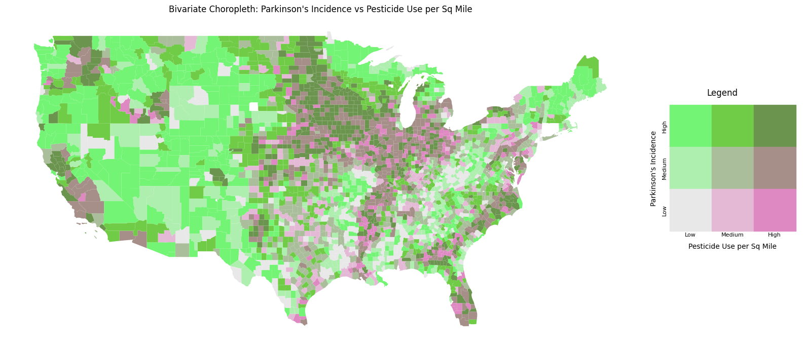
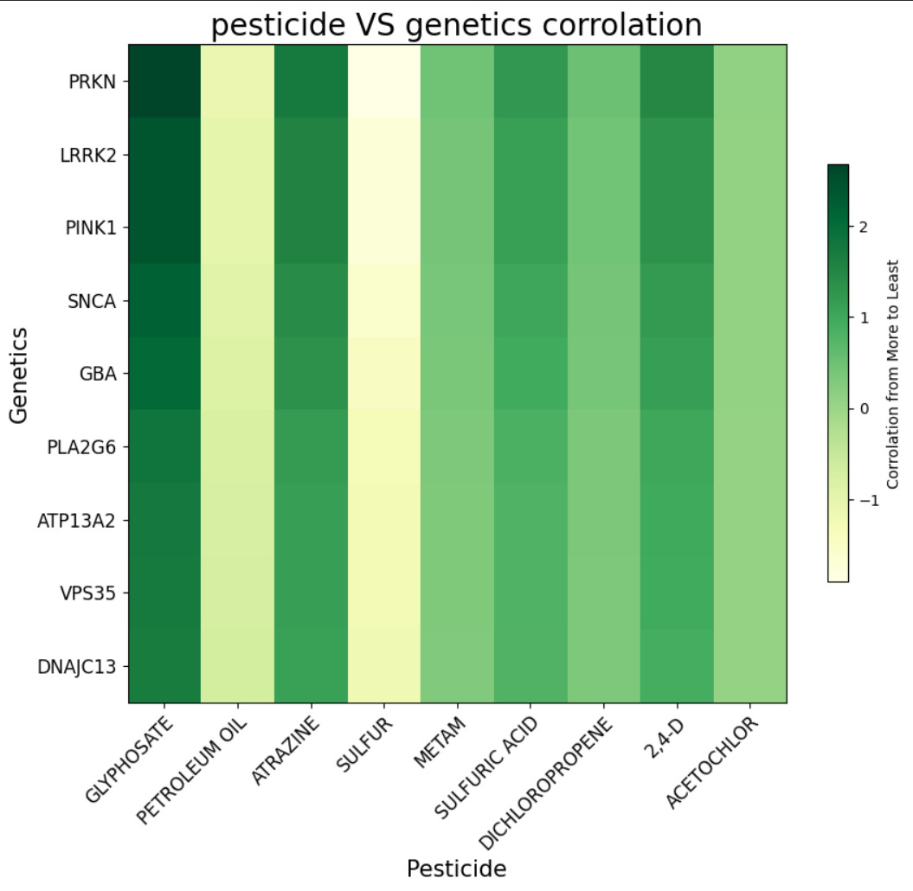

Exploring relationships between pesticides and genetic markers.
This bivariate map visualizes how pesticide exposure and Parkinson’s disease incidence overlap across U.S. counties. The combined color scale represents the interaction between two variables at once, helping identify regions where high pesticide use aligns with higher disease rates.

This heatmap illustrates the strength of correlation between specific pesticides and genes associated with Parkinson’s disease. Darker colors represent stronger relationships, helping identify which environmental exposures may interact with genetic susceptibility.
